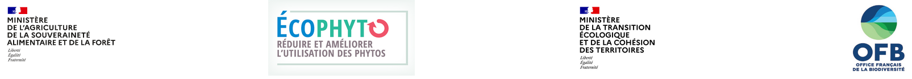

Les traitements phytosanitaires

Les produits phytopharmaceutiques (que l’on appelle aussi « pesticides ») sont des substances chimiques ou biologiques, telles que les herbicides, les insecticides ou les fongicides. Ils protègent les cultures contre les maladies, les ravageurs ou les plantes adventices.
Contexte
Définitions
Pour évaluer la pression phytosanitaire sur une parcelle, on regarde d’abord les différents produits utilisés. Si lors d’un passage un agriculteur applique un mélange de deux produits, cela compte pour deux « traitements ». Un même produit appliqué deux fois sur une parcelle compte également pour deux traitements.
Une agence nationale, l’Anses, établit pour chaque produit une dose homologuée, la dose maximale autorisée par traitement, définie pour chaque usage de ce produit.
Pour calculer un « indice de fréquence de traitement », on utilise une « dose de référence » : c’est la plus grande dose homologuée du produit pour une culture donnée, et pour une cible donnée (ex. : le mildiou de la vigne). Elle s’exprime typiquement en kilos par hectare, litres par ha, ou litre de produit par hectolitre d’eau.
L’indice de fréquence de traitement (IFT) additionne le nombre de doses de référence qu’une parcelle va recevoir durant un cycle de production. Si 2 passages ont eu lieu avec chaque fois la dose de référence, l’IFT est de 2. Si un seul passage avait appliqué une dose 2 fois plus élevée que la référence, cela compterait aussi pour 2.
L’IFT tient compte de la surface traitée ; dans certains cas, une partie seulement de la parcelle est traitée. Si seulement 50 % de la parcelle a été traitée avec 2 produits à la dose de référence, on dira que l’IFT total de la parcelle est de 2 x 50 % = 1.
Tout cela se résume par la formule suivante, qui vaut pour un seul produit administré :